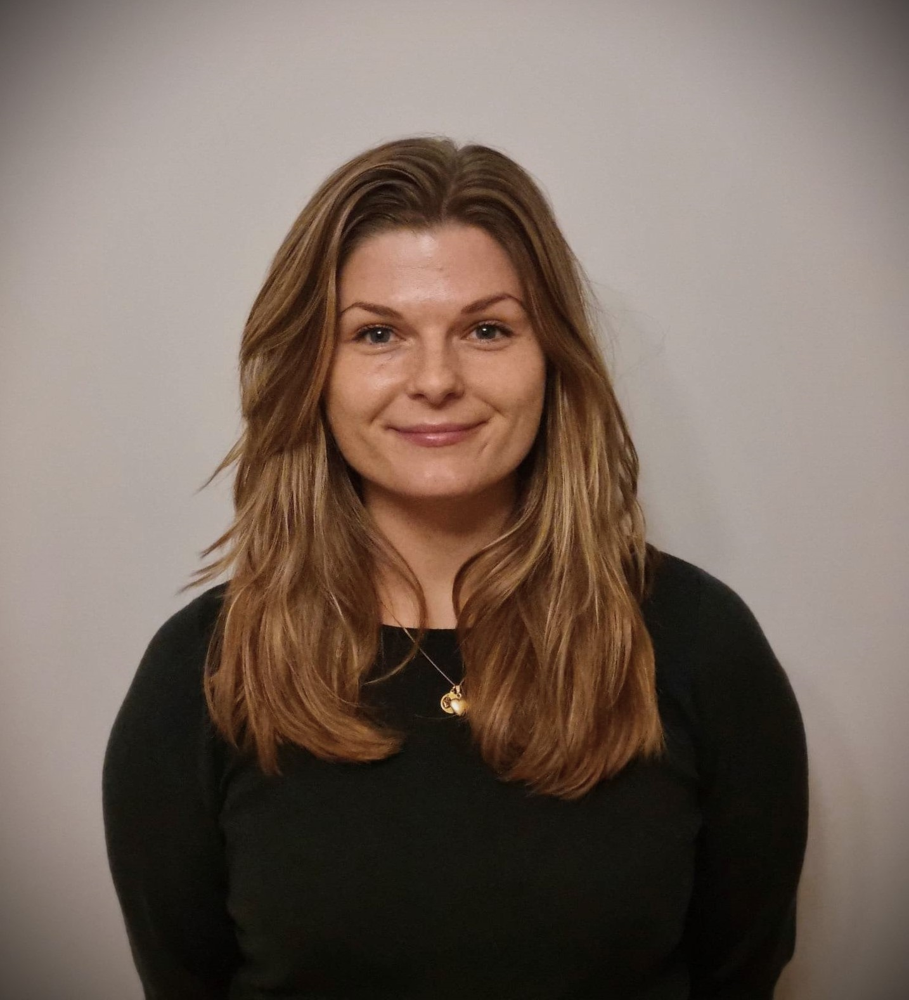

<div id="about">
    <div class="container">
        <div class="row">
            <div class="about-col-1">
                
            </div>
            <div class="about-col-2">
                <h1 class="sub-title">About Me</h1>
                <p>
                </p>

                <div class="tab-titles">
                    <p class="tab-links active-link" onclick="opentab('skills')">Skills</p>
                    <p class="tab-links" onclick="opentab('Work experience')">Work experience</p>
                    <p class="tab-links" onclick="opentab('Education')">Education</p>
                </div>
                <div class="tab-contents active-tab" id="skills">
                    <ul>
                        <li><span>UI/UX</span><br>Designing Web/App interfaces</li>
                        <li><span>Technical</span><br>Knowledge in programming, bussiness analytics, AI and databases</li>
                        <li><span>Organizational</span><br>Knowledge in management, IT-strategies, HCI and digitalisation</li>
                    </ul>
                </div>
                <div class="tab-contents" id="Work experience">
                    <ul>
                        <li><span>Novacura, 2022</span><br>Product support consultant</li>
                        <li><span>SATS, 2015-2020</span><br>Costumer service</li>
                        <li><span>Thule, 2018-2020</span><br>Seller</li>
                    </ul>
                </div>
                <div class="tab-contents" id="Education">
                    <ul>
                        <li><span>Univeristy of Gothenburg, 2020-2023</span><br>B.Sc in Systems Science  - Thesis in collaboration
                            with AISweden and VGR</li>
                        <li><span>University of Uppsala, 2022</span><br>UI Design for Games</li>
                        <li><span>Univeristy of Skövde, 2022</span><br>Sustainable Product Development focusing on UX</li>
                        <li><span>Univeristy of Linköping, 2021</span><br>Elements of AI</li>
                        <li><span>Univeristy of Lund, 2017</span><br>Media and communication Science</li>
                    </ul>
                    
                </div>
                <div class="social-icons">
                    <a href="https://www.linkedin.com/in/henrietta-sundberg-68a411190/"><i
                        class="fa-brands fa-linkedin"></i></a>
                    <a href="https://github.com/H-Sundberg">
                        <i class="fa-brands fa-square-github"></i></a>
                </div>
                <a href="images/resumé_Henrietta_Sundberg.pdf" download class="btn btn2">Download CV</a>
            </div>
        </div>
    </div>
</div>-